Moving [Type] Face
Two typefaces built to disagree, one ruled by a grid and one drawn from my own characters, layered until control and personality share the same letter.
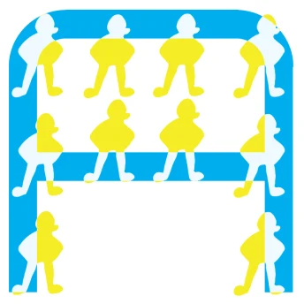
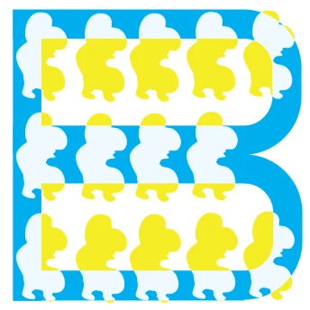
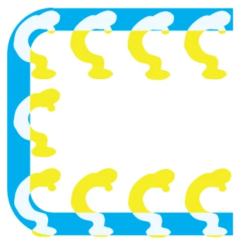
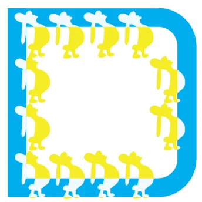
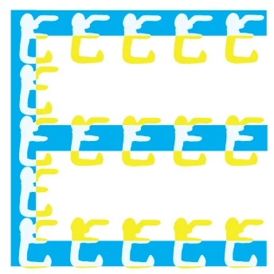
- Role
- Type designer
- Duration
- 1 week
- Team
- Solo, self-initiated
- Tools
- Illustrator, pen and paper
01 The question
Can one letter hold both a rule and a personality?
Most type systems choose a side. A geometric face promises consistency; a hand-drawn face promises a voice. I wanted a typeface that was personal in the literal sense, drawn from characters of my own, without giving up the legibility that makes a letter useful.
So I built two faces that argue with each other and made the argument the design.
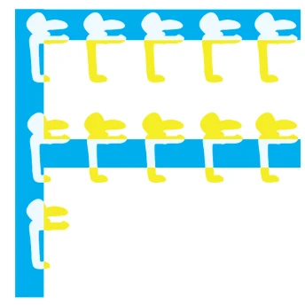
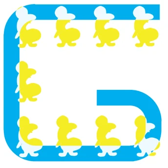
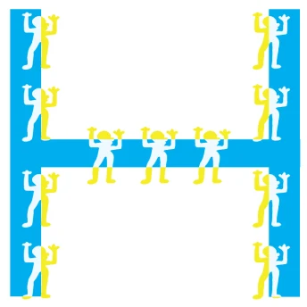
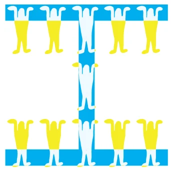
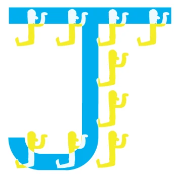
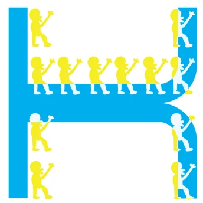
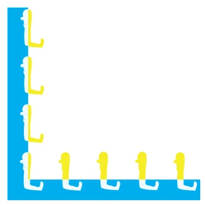
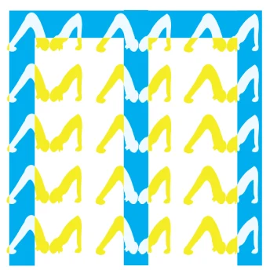
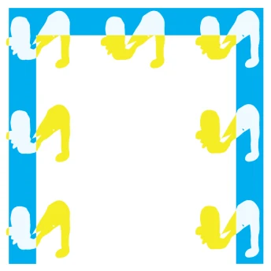
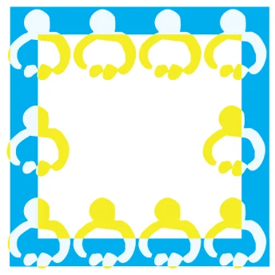
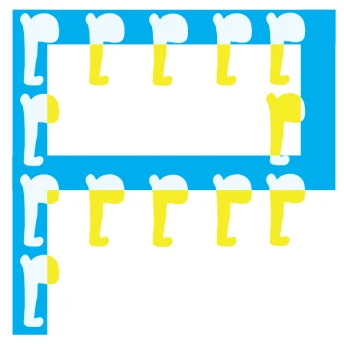
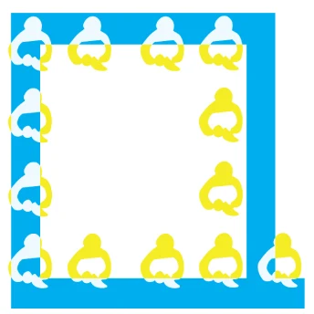
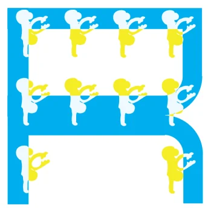
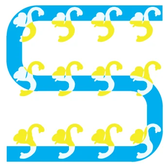
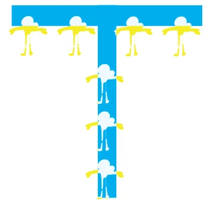
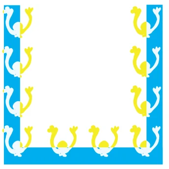
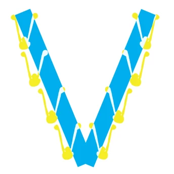
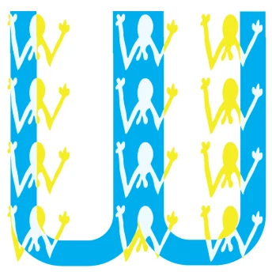
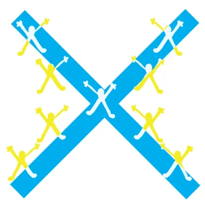
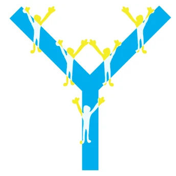
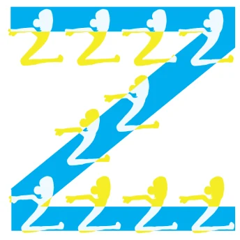
02 The blue system
A grid, a single stroke weight, and very few moves.
The blue face is built on a consistent grid with a limited line language: one stroke width and a small set of straight and curved segments that every letter shares. Its job is structure. Read from across a room, the blue alone still spells the word.
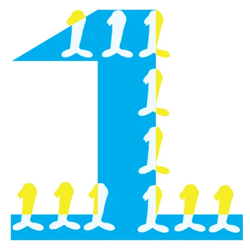
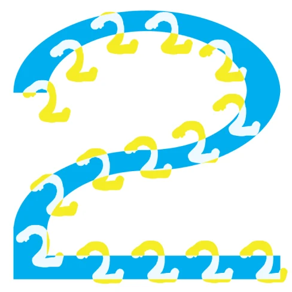
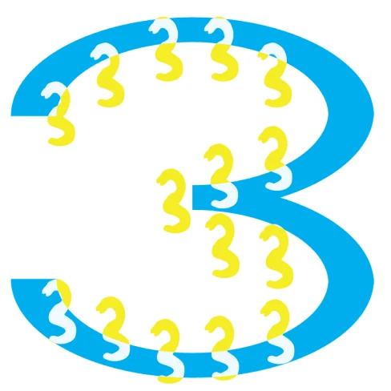
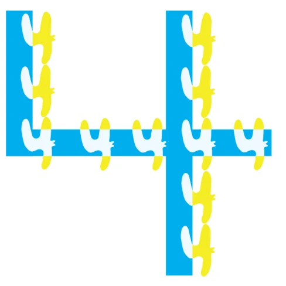
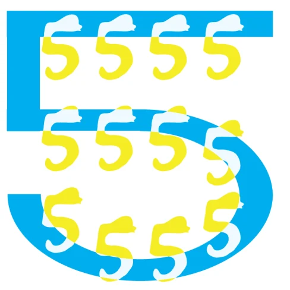
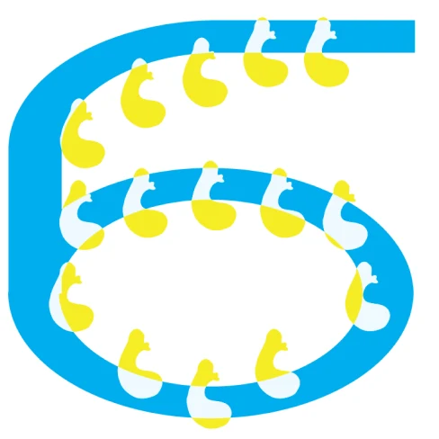
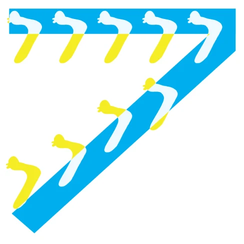
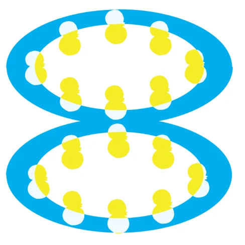
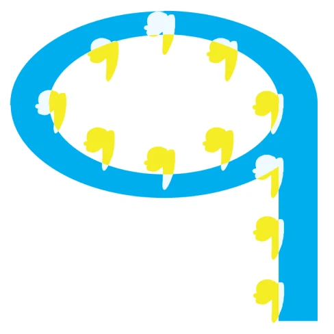
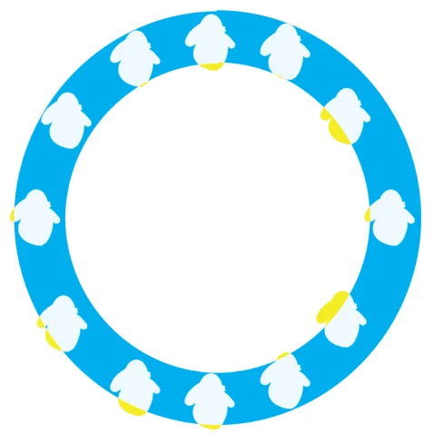
03 The yellow hand
Drawn by hand, from characters I already carry around.
The yellow face started on paper. Each letter is assembled from small figures in the style of my own character illustrations, closer to script than to geometry, with no two quite the same. Where the blue is a rule, the yellow is a crowd; it walks, leans, and stacks itself into shape.
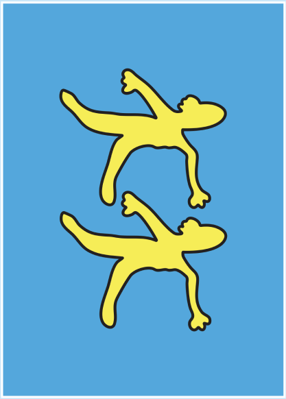
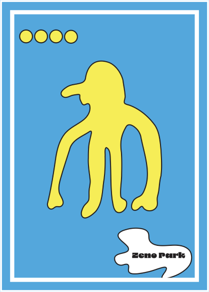
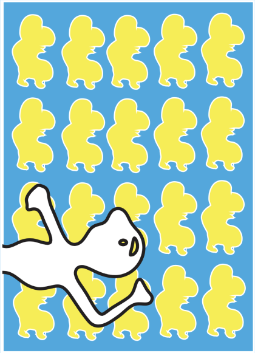
04 Layering
Transparency is where the two faces meet.
Laying the yellow over the blue and adjusting its transparency creates moments where precision and spontaneity interact: the grid shows through the figures, and the figures soften the grid. The result is a hybrid system, rigid in construction and human in texture. I extended it into a set of postcards and a poster that shows the full character set, so the type works as both a communication tool and a narrative.
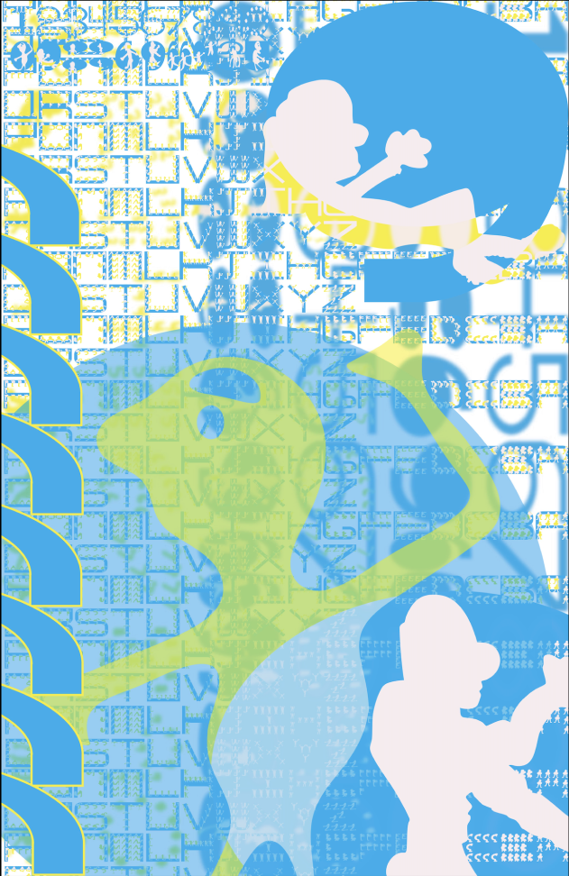
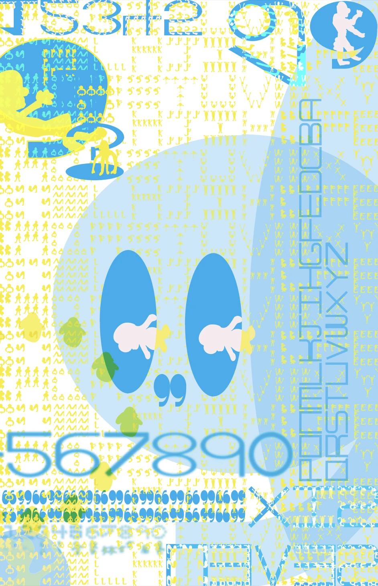
05 The characters
Where the figures step inside the letter.
In a second set of glyphs, the characters stop walking along the strokes and move into the shapes themselves: a white figure standing inside a blue counter, one character per glyph, the same way the postcards stage one figure at a time.
Together with the alphabet, the numerals, the postcards and the posters, it turns the two faces into a full set that can carry a message and tell a story.
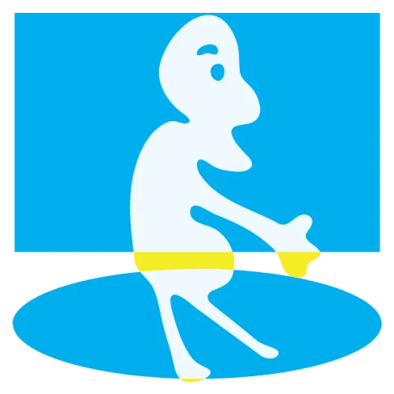
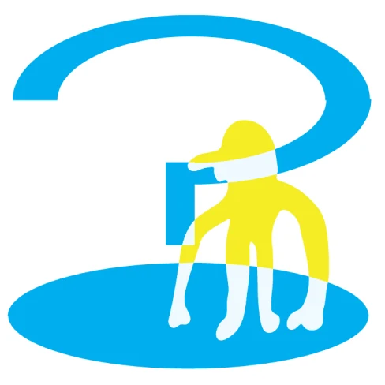
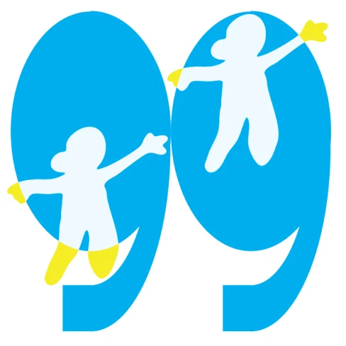
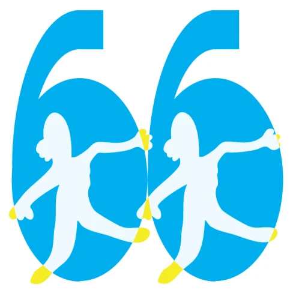
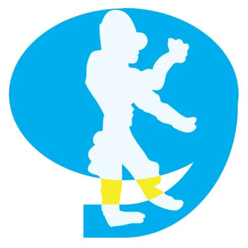
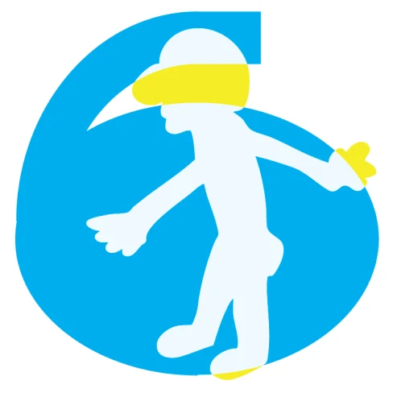
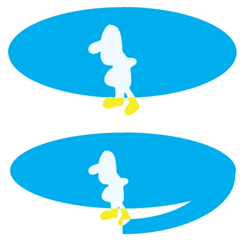
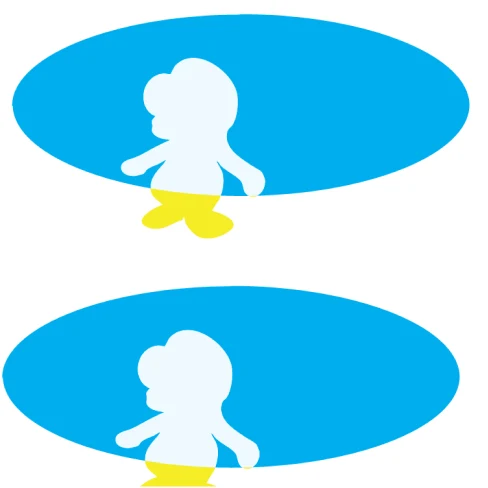
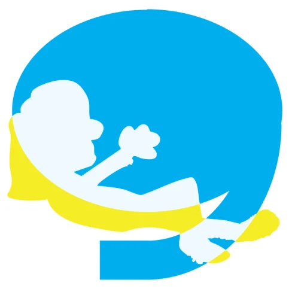
06 Try it
Type something in Moving [Type] Face.
Letters A to Z and numbers 0 to 9 are drawn. Any other key leaves a blank space.
07 Takeaway
Where it succeeds: legibility with a pulse.
A type system is an interface; it decides how quickly someone understands and how they feel while doing it. Splitting those two jobs into two layers let the blue carry legibility and the yellow carry voice, the same lesson behind my Head in the Clouds work, where softness belongs in the background and never in the text. A face like this fits brands that talk to kids and young audiences, where play has to stay readable.
Where it could live
Children’s learning materials, festival and event identities, packaging with a character.
What worked
Separating structure and personality into layers kept both honest.
Next
Build it as a variable font with an axis that slides from blue to yellow.